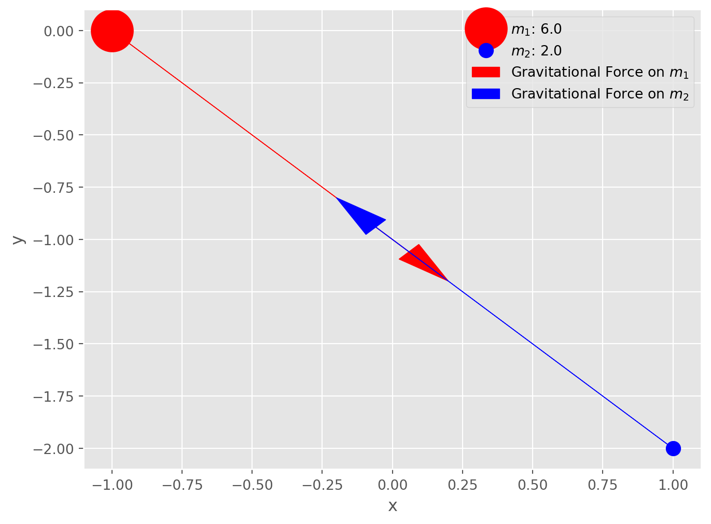
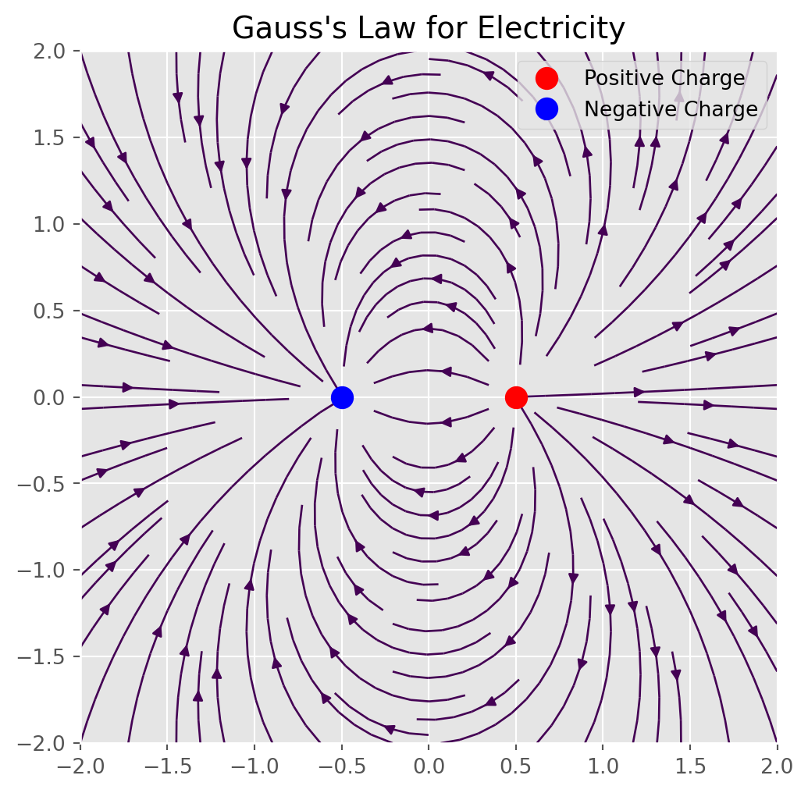
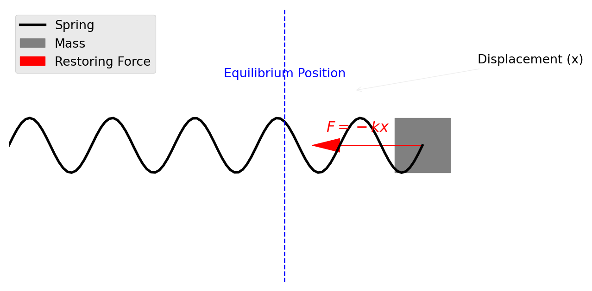
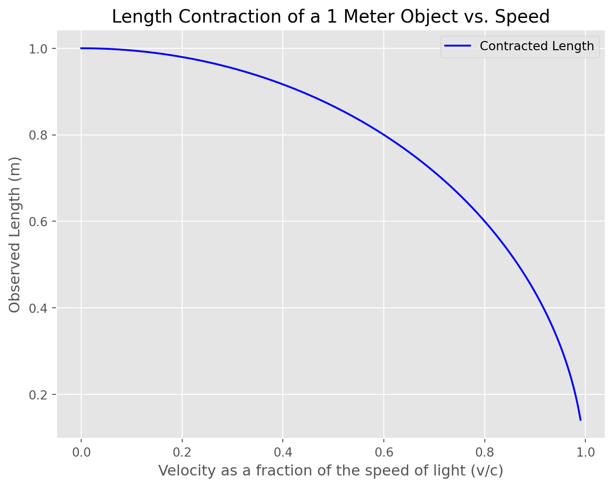

Pythagorean Time Dilation
A Summary of Classical Mechanics
Math
Physics
A Journey Through (Space)Time
I do not know what I may appear to the world, but to myself I seem to have been only like a boy playing on the sea-shore, and diverting myself in now and then finding a smoother pebble or a prettier shell than ordinary, whilst the great ocean of truth lay all undiscovered before me 1
Motivation
This overview is roughly structured by the concepts I found most profound while reading and researching topics in Sean Carroll’s book The Biggest Ideas in The Universe: Space, Time, and Motion.
- While velocity only has meaning in other reference frames, acceleration is absolute, and can be identified intriniscally without one (in most cases).
- The squared term in the inverse square law is derived from the spacial geometry we live in (three dimensions).
- Magnetism only exists as a relativistic effect when an object moves relative to an electric field, which helps explain why we have never observed a magnetic monopole.
- The path a particle or system takes is always the most “economical” route through spacetime via minimization/maximization of action—a scalar quantity that describes how the balance of kinetic versus potential energy of a physical system changes.
- Conservation laws arise directly from symmetries in the laws of physics. I.e. The invariance of a system’s laws relate directly to a given conservation law: time invariance \(\rightarrow\) energy conservation, spatial invariance \(\rightarrow\) momentum conservation, and rotational symmetry \(\rightarrow\) angular momentum conservation.
- The speed of light, \(c\), provides a conversion factor between time and space. Like energy \(\Leftrightarrow\) mass and electricity \(\Leftrightarrow\) magnetism, they are aspects of the same phenomena.
- Lorentz transformations, which describe effects like length contraction and time dilation, can be derived from the invariant spacetime interval—analagous to the Pythagorean theorem—in the geometry of Minkowski space.
- Schwartzchild’s solution to General Relativity contained a curious mathematical singularity which—originally thought to be a coordinate singularity—turned out to be a real curvature singularity in spacetime: the infamous black hole.
Disclaimer
I’m neither a mathematician or physicist but do my best to clarify the meaning of each variable and operator in the equations introduced.
Absolute Acceleration
Speed has never killed anyone. Suddenly becoming stationary, that’s what gets you 2
Imagine yourself floating in deep space, with only distant stars as a backdrop. Would you be able to tell if you were moving? Surprisingly, no. As Einstein demonstrated, velocity only has meaning relative to another reference frame. If two people drift past each other, neither can determine who is “stationary” or “moving” in any absolute sense—both could be moving, or one could be stationary. In empty space, without other points of reference, velocity becomes entirely relative.
Oddly, acceleration is different. If you were suddenly accelerated in your spacesuit, you’d feel it immediately—your body would press against the suit, jerking you forward. Acceleration creates a force that acts on you directly, causing a force gradient you can feel. Unlike velocity, which requires no force to sustain, acceleration always involves a force acting on a mass.
In fact, you can create your own “accelerometer” with something as simple as a spring and weight. Hang the weight from a spring, and if you accelerate left or right, the weight will stretch the spring in the opposite direction. This setup works because acceleration produces a noticeable force, while constant velocity does not.
Back on Earth, even when we’re standing still, we feel the effect of acceleration toward the planet’s center, which we experience as weight. This downward pull is balanced by the normal force of the ground pushing back up against us, allowing us to experience acceleration even when we appear stationary.
Physics equations are extraordinary because they describe universal relationships in the natural world. For instance, the momentum of an object is simply the product of its mass and velocity: \[p = mv\] This relationship applies universally to every object with mass and velocity. And I think that’s pretty neat 3. Notably, the equation shows that momentum is directly proportional to velocity for a constant mass—doubling an object’s velocity doubles its momentum.
Kinematic Equations
Moving Through Time: Universal Relationships of Motion
These equations describe universal relationships about an object’s motion with constant acceleration—useful for predicting where or how fast something will be at a given time.
\[v = v_0 + at\]
Velocity increases linearly with time when acceleration is constant
\[s = s_0 + v_0 t + \frac{1}{2} at^2\]
Position grows with time, influenced by both your initial speed and the acceleration
\[v^2 = v_0^2 + 2a(s - s_0)\]
The relationship between velocity and distance, without needing time
An interesting consequence to these equations is given position or velocity as a function of time, the equation will predict the function’s value for whatever \(t\) is. Meaning, these universal relationships do not operate as if the past (fixed from our perspective) is fundamentally different from the future (not-fixed, from our perspective).
What’s the point of calculus
Calculus addresses two fundamental problems involving limits: rates of change and accumulation.
Derivatives: The derivative represents the rate of change of a quantity. It answers questions like, “How fast is something changing at an exact moment?” Calculus solves this by finding \(\frac{dx}{dt}\) as both \(dx\) and \(dt\) approach zero—a challenge because dividing by zero is undefined. By using limits, calculus lets us precisely calculate this “instantaneous” rate without ever actually dividing by zero.
Integrals: The integral represents the accumulation of quantities over an interval, like the area under a curve. To do this, calculus sums up infinitely many tiny pieces (Riemann squares) as their width approaches zero. This limit-based approach lets us find the exact area, even under curves that are difficult or impossible to sum otherwise.
For example, if we expand a small change in a function, such as \((x + h)^2 - x^2\), and take the limit as \(h \rightarrow 0\), we end up with \(2x\)—the derivative of \(x^2\). What’s really magical is the inverse of \(x^2\) is the integral. This makes sense if you consider the derivative gives the rate of change (e.g. velocity from a function of position) and integration adds the accumulated change to get the original value (e.g. total distance from a function of velocity).
\[ \frac{dx}{dt} f(x) = \int f(v) \space dt \]
Kinematic Derivation
The kinematic equations can be derived from the basic definition of calculus. Given a change in position over time is velocity: \[\frac{dx}{dt} = v\]
we want to express \(v\) in terms of \(t\), since that also changes over time.
\[v(t) = v_0 + at\]
Reformulate velocity as the first time derivative of position
\[\frac{dx}{dt} = v_0 + at\]
Then integrate with respect to time
\[x(t) = \int (v_0 + at) dt\]
Solving for the integral gives us
\[x(t) = v_0t + \frac{1}{2}at^2 + C\]
Where C would represent whatever the initial position is, which we can call \(x_0\). This gives us
\[x(t) = x_0 + v_0t + \frac{1}{2}at^2\]
You can plug this equation into \(v = v_0 + at\) and do some math to get:
\[v^2 = v_0^2 + 2a(x-x0)\]
The Universal Law of Gravitation
Not the Deepak Chopra variety
Newton’s Law of Gravitation describes the gravitational force between two masses, expressing how every mass exerts an attractive force on every other mass in the universe:
\[ F = G\frac{m_1 m_2}{r^2} \]
where:
- \(F\) is the gravitational force between the two masses.
- \(G\) is the gravitational constant, a fundamental constant that calibrates the strength of gravity.
- \(m_1\) and \(m_2\) are the masses of the two objects.
- \(r\) is the distance between the centers of the two masses.

Why the Inverse-Square Law? Why \(r^2\)?
The inverse-square relationship, \(\frac{1}{r^2}\), reflects a fundamental property of how forces and fields spread out in three-dimensional space. Newton’s insight into this came from observing that gravitational and other forces, like light intensity, diminish in strength with the square of the distance.
In three-dimensional space, when a force radiates outward from a point source (such as a mass), it spreads uniformly over the surface of an expanding sphere centered around that source. The surface area of a sphere grows proportionally to \(r^2\), where \(r\) is the radius of the sphere. Consequently, as the distance \(r\) increases, the same force is distributed over a larger area, causing the intensity at any given point on that surface to diminish in proportion to \(\frac{1}{r^2}\).
Thus, the inverse-square law isn’t arbitrary but rather a natural consequence of geometry in three-dimensional space. If we lived in a universe with different spatial dimensions, the exponent would change accordingly. For example, in a two-dimensional plane, the force would weaken with \(\frac{1}{r}\), while in four dimensions, it would decay with \(\frac{1}{r^3}\).
Newton’s Universal Law of Gravitation describes the generated by two masses. This equation also ties together the inverse square law (decay of intensity of effects such as light, radiation, or gravity).
\[F = G\frac{m_1m_2}{r^2}\]
- \(F\) is the gravitational force between two masses.
- \(G\) is the gravitational constant.
- \(m_1\) and \(m_2\) are the masses of the two objects.
- \(r\) is the distance between the centers of the two masses.
Why is \(r\) squared? Why not quadrupled or halved? The inverse square relationship emerges as a property of living in three dimensions. The volume of a sphere increases with the square of the radius: \(4\pi r^2\).
Maxwell’s Equations
The Original Field Science
Maxwell’s Equations elegantly describe the behavior of electric and magnetic fields, revealing that these two forces are not separate but deeply interconnected. They provide a unified framework for understanding how electric charges and currents create fields that interact, propagate, and influence each other, ultimately giving rise to light itself.
Gauss’s Law (Electric Field)
\[\nabla \cdot \mathbf{E} = \frac{\rho}{\epsilon_0}\]
Understanding the Del Operator (\(\nabla\)) in Maxwell’s Equations
The del operator (\(\nabla\)) is a vector operator that captures how quantities change in space, and it’s central to expressing Maxwell’s equations in a compact, powerful form.
Gradient (\(\nabla \phi\)): When applied to a scalar field \(\phi\), \(\nabla\) (del) gives the gradient, pointing in the direction of the greatest rate of change. For example, in an electric potential field \(\phi\), the gradient \(\vec{E} = -\nabla\phi\) tells us how the electric field varies in space.
Divergence (\(\nabla \cdot\)): When \(\nabla\) is applied to a vector field with a dot product (\(\nabla \cdot\)), it gives the divergence. Divergence measures the “outflow” or “inflow” of a field at a point:
- Gauss’s Law for Electricity \((\nabla·\vec{E} = \frac{ρ}{ε_0})\): This tells us that the electric field \(\vec{E}\) diverges from electric charges.
- Gauss’s Law for Magnetism \((\nabla·\vec{B} = 0)\): This shows that magnetic field lines have no divergence—they form closed loops, indicating no magnetic monopoles.
Curl (\(\nabla \times\)): When \(\nabla\) is applied to a vector field with a cross product (\(\nabla \times\)), it gives the curl, measuring the “rotation” or “circulation” of a field:
- Faraday’s Law \((\nabla×\vec{E} = -\frac{∂\vec{B}}{∂t})\): A changing magnetic field \(\vec{B}\) induces a circulating electric field \(\vec{E}\).
- Ampère’s Law (with Maxwell’s Correction) \((\nabla×\vec{B} = μ_0\vec{J} + μ_0ε_0\frac{∂\vec{E}}{∂t})\): A changing electric field \(\vec{E}\) or current density \(\vec{J}\) induces a circulating magnetic field \(\vec{B}\).
Summary:
The del operator (\(\nabla\)) is a vector operator that operates on a: - Gradient (\(\nabla\phi\)): scalar field, producing a vector field. - Divergence (\(\nabla\cdot\)): vector field, producing a scalar field. - Curl (\(\nabla\times\)): vector field, producing a vector field.
Gauss’s Law describes the relationship between electric charges and the electric field they produce. Specifically, it states that the electric flux (the “flow” of the electric field) through a closed surface is proportional to the total charge enclosed within that surface. For example, the electric field around a point charge (like an electron) points away from the charge if it’s positive, and towards the charge if it’s negative. The strength of the field is directly related to the amount of charge.
- \(\nabla \cdot \mathbf{E}\): This is the divergence of the electric field \(\mathbf{E}\), which essentially measures how much the electric field is “spreading out” from a point.
- \(\rho\): This represents the charge density (charge per unit volume). The more charge you have in a given region, the stronger the electric field diverges from that region.
- \(\epsilon_0\): This is the permittivity of free space, a constant that determines how electric fields interact in a vacuum.

Gauss’s Law for Magnetism
\[\nabla \cdot \mathbf{B} = 0\]
This law states that there are no magnetic monopoles — that is, no isolated north or south magnetic poles. Magnetic fields (\(\mathbf{B}\)) always form closed loops. Every magnetic field line that leaves a north pole must eventually return to a south pole.
- \(\nabla \cdot \mathbf{B}\): This is the divergence of the magnetic field \(\mathbf{B}\), which measures how much the magnetic field is “spreading out” from a point.
- The fact that it’s equal to zero means that the net magnetic “flux” through any closed surface is always zero, implying that magnetic field lines don’t begin or end at any point (unlike electric fields, which start or end on charges).
Faraday’s Law of Induction
\[\nabla \times \mathbf{E} = -\frac{\partial \mathbf{B}}{\partial t}\]
Meaning: Faraday’s Law explains how a changing magnetic field creates an electric field. If you have a time-varying magnetic field (\(\mathbf{B}\)), it induces a circulating electric field (\(\mathbf{E}\)). This is the principle behind electromagnetic induction, which is used in transformers and electric generators. When a magnet is spun around near a coil of wire, the changing magnetic field induces an electric current in the wire, which we can then use as electrical power.
- \(\nabla \times \mathbf{E}\): This is the curl of the electric field \(\mathbf{E}\), which measures how much the electric field is “circulating” around a point.
- \(\frac{\partial \mathbf{B}}{\partial t}\): This is the time rate of change of the magnetic field. It represents how the magnetic field is changing in time.
- The negative sign indicates that the induced electric field opposes the change in the magnetic field (this is Lenz’s law).
Ampère’s Law (with Maxwell’s Correction)
\[\nabla \times \mathbf{B} = \mu_0 \mathbf{J} + \mu_0 \epsilon_0 \frac{\partial \mathbf{E}}{\partial t}\]
- \(\nabla \times \mathbf{B}\): This is the curl of the magnetic field \(\mathbf{B}\), which measures how much the magnetic field “circulates” around a point.
- \(\mathbf{J}\): This is the current density (current per unit area).
- \(\frac{\partial \mathbf{E}}{\partial t}\): This represents the rate of change of the electric field in time.
Ampère’s Law relates electric currents and changing electric fields to the magnetic field they produce. It says that magnetic fields can be generated in two ways:
- By electric currents (moving charges), as described by the first term, \(\mu_0 \mathbf{J}\).
- By changing electric fields, as described by the second term, \(\mu_0 \epsilon_0 \frac{\partial \mathbf{E}}{\partial t}\), which is called the displacement current (introduced by Maxwell).
Ampère’s Law with Maxwell’s correction tells us that currents (moving charges) and changing electric fields generate magnetic fields. Without the time-dependent term \(\frac{\partial \mathbf{E}}{\partial t}\), this would just be the original Ampère’s Law, which describes how an electric current creates a magnetic field (like in an electromagnet). Maxwell’s addition was crucial because it showed that even in the absence of a physical current, a changing electric field can still produce a magnetic field.
The Unification of Electromagnetism
Maxwell’s equations, taken together, explain how electric and magnetic fields interact and propagate. If you combine Faraday’s Law and Ampère’s Law, you can derive the wave equation for both electric and magnetic fields, showing that disturbances in these fields propagate at the speed of light. Together, these two effects allow electromagnetic waves to propagate through space, with the electric and magnetic fields continuously regenerating each other.
This is why light, radio waves, X-rays, and all other electromagnetic radiation are essentially electromagnetic waves: oscillating electric and magnetic fields that move through space, even in a vacuum.
Lagrangian and Hamiltonian Mechanics
Different ways to tell the same (Newtonian) story
In Newtonian mechanics, where \(F = ma\), we focus on forces acting at a specific point in space and time to answer “What happens at the next \(t\)?” This approach helps us understand motion in terms of forces and accelerations.
In contrast, mechanics based on action principles—Lagrangian and Hamiltonian mechanics—start from a different perspective, emphasizing the concept of action. Action represents an energy tradeoff between kinetic and potential energy, shaped by the system’s physical properties. Instead of predicting the immediate “next step,” these approaches answer questions about paths, e.g. which trajectory will efficiently guide a rocket to the moon?
In lieu of forces, Lagrangian and Hamiltonian mechanics prioritize paths, energy, and phase space. Phase space, in particular, provides a powerful framework for visualizing the state of a system and plays a central role in fields like quantum mechanics and field theory.
To see these differences in action, we can visualize a classical physical system—the simple harmonic oscillator—through the lenses of Newtonian, Lagrangian, and Hamiltonian mechanics.
Simple Harmonic Oscillator
The Simple Harmonic Oscillator is a fundamental model of periodic motion, where an object experiences a restoring force proportional to its distance from an equilibrium position. This force always acts toward the equilibrium, driving the object back whenever it is displaced.

The Action Integral
The profound economy of Nature
The action integral \(S\) is the “score” of a given path taken by a system between two points in time.
\[S[q(t)] = \int_{t_1}^{t_2} L(q, \dot{q}, t) \, dt\]
- \(S[q(t)]\) is the action which depends on the path \(q(t)\)
- \(L(q, \dot{q}, t)\) is the Lagrangian, which is the difference between the kinetic energy \(T\) and potential energy \(V\)
- Note: Dot notation above a variable represents its first derivative. Two dots for the second derivative.
\[L = T - V\]
In essence, the action integral sums up the Lagrangian \(L\) over a specific path from \(t_1\) to \(t_2\). This principle of minimizing the action is known as the principle of least action, and it gives us the most efficient or “natural” path a system will take.
The Euler-Lagrange Equation
We’re still missing one component—a condition that allows us to minimize the Lagrangian. Thankfully someone way smarter than any of us worked out the rather elegant solution, the Euler-Lagrange equation:
\[\frac{d}{dt} \left( \frac{\partial L}{\partial \dot{q}} \right) - \frac{\partial L}{\partial q} = 0\]
- \(\frac{\partial L}{\partial \dot{q}}\): This is the partial derivative of the Lagrangian with respect to the velocity \(\dot{q}\). It measures how sensitive the Lagrangian is to changes in the system’s velocity.
- \(\frac{d}{dt} \left( \frac{\partial L}{\partial \dot{q}} \right)\): This term takes the time derivative of the above quantity, capturing how this sensitivity changes as the system evolves over time.
- \(\frac{\partial L}{\partial q}\): This is the partial derivative of the Lagrangian with respect to position \(q\). It measures how sensitive the Lagrangian is to changes in the system’s position.
The Euler-Lagrange equation tells us that, for the actual path taken by the system, these two rates of change are equal and opposite.
Intuition Behind the Equation
The Euler-Lagrange equation is the mathematical expression of the principle of least action. It provides the conditions under which the action \(S\) is minimized.
To build intuition around this concept, let’s imagine a ball rolling down a frictionless hill.
When the ball starts at the top of the hill, it has maximum potential energy (due to height and the acceleration from gravity) and zero kinetic energy (energy due to motion). As it begins rolling down, gravity pulls it lower, decreasing its potential energy. But energy can’t just disappear—instead, it converts into kinetic energy, causing the ball to speed up.
The ball follows a path where potential energy smoothly turns into kinetic energy as it descends. The principle of least action explains this smooth exchange by “favoring” paths where energy changes are gradual and balanced.
When the ball reaches the bottom, it’s out of hill to roll down. Its potential energy is minimized, and all the energy it gained from descending has been converted into kinetic energy.
This trade-off between potential and kinetic energy is natural because it minimizes abrupt changes in energy. A path where energy flowed in sharp bursts or stopped suddenly would require additional forces or disruptions. A smooth path minimizes these disturbances, making it the most efficient in terms of conserving energy while following the laws of physics.
If this process sounds similar to heat diffusion, you’re doin good baby. Both are examples of the Universe’s tendency towards equilibrium while maintaining conservation.
TLDR
Any change in kinetic energy is exactly offset by an opposite change in potential energy, and vice versa.
The Action of Simple Harmonic Motion
To see the action integral in action (hehe), let’s examine a simple harmonic oscillator, such as a mass attached to a spring and solve for the Lagrangian.
Kinetic Energy \(T\)
For an object of mass \(m\) moving with velocity \(\dot{q}\), the kinetic energy \(T\) is given by: \[T = \frac{1}{2} m \dot{q}^2\]
Potential Energy \(V\)
For a spring with spring constant \(k\), the potential energy \(V\) depends on the displacement \(q\) from equilibrium: \[V = \frac{1}{2} k q^2\]
Lagrangian \(L = T - V\)
Substituting the expressions for \(T\) and \(V\):
\[L = T - V = \frac{1}{2} m \dot{q}^2 - \frac{1}{2} k q^2\]
Action Integral
To find the path \(q(t)\) that the system takes between times \(t_1\) and \(t_2\), we evaluate the action integral: \[S[q(t)] = \int_{t_1}^{t_2} \left( \frac{1}{2} m \dot{q}^2 - \frac{1}{2} k q^2 \right) \, dt\]
Finding the Path (Euler-Lagrange Equation)
Applying the Euler-Lagrange equation to the Lagrangian leads to the equation of motion: \[\frac{d}{dt} \left( \frac{\partial L}{\partial \dot{q}} \right) - \frac{\partial L}{\partial q} = 0\]
Solving this gives the differential equation for a simple harmonic oscillator: \[m \ddot{q} + k q = 0\]
which has solutions in the form of sinusoidal functions, describing the oscillatory motion \(q(t)\) over time.
Hey not so fast, where the hell is \(q(t)\)?
Ok, ok sorry. I tried to pull a fast one. Solving the Lagrangian only gave us this differential equation—it didn’t directly give us the solution for \(q(t)\), which is the explicit path or trajectory of the system over time.
We can rewrite our solution as
\[\ddot{q} + \frac{k}{m}q=0\]
Let \(\omega = \sqrt{\frac{k}{m}}\), where \(\omega\) is the angular frequency of the oscillator. Now the equation becomes: \[\ddot{q} + \omega^2 q = 0\]
This equation has a general solution of the form: \[q(t) = A \cos(\omega t) + B \sin(\omega t)\] where \(A\) and \(B\) are constants determined by the initial conditions of the system (such as initial position and velocity).
But wait, why is that the general solution?
Oh my god fuck off already
Interpretation
This solution, \(q(t) = A \cos(\omega t) + B \sin(\omega t)\), is the explicit time-dependent path or trajectory that the oscillator follows. It describes the oscillatory motion in terms of time, with:
- \(\omega\): The frequency of oscillation, showing how quickly the system oscillates.
- \(A\) and \(B\): Constants that depend on the starting conditions (e.g., where and how fast the mass was initially moving).
If you squint, you’ll see we’ve derived Hooke’s Law. Since \(\ddot{q} = a\) and \(F=ma\):
\[ ma = F = - kq \]
where \(k\) is the spring constant AKA restoring force over the distance (\(\frac{N}{m}\)).
The Hamiltonian Reform(ul)ation
Puttin’ big E first
We spent a a bit of time on Lagrangian mechanics because it also requires introduces several other interesting concepts like the principle of least action. The good news is we’ve done a lot of the heavy lifting and there’s nothing too crazy about now thinking about Hamiltonian mechanics, where we shift from paths to energies.
While the Lagrangian \(L = T - V\) is built around action, the Hamiltonian is a powerful reformulation that shifts the focus to energy. The Hamiltonian \(H\) typically represents the total energy of a system \(H = T + V\) (kinetic + potential energy) and is built to highlight conservation laws.
Unlike the Lagrangian, the Hamiltonian only depends on the position \(q\) and momentum \(p\), but not directly on \(t\) itself. This approach introduces phase space (a space defined by positions and momenta), allowing viusalization of a system’s entire state at any moment. Shifting from position/velocity to position/momentum reveals insights about stability, resonance, and even chaotic behavior in systems.
Reviewing Figure 9 now may be elucidating. First, the phase space for the simple harmonic oscillator shows energy is conserved (closed ellipse). Second, thinking back to our ball-on-a-hill example and starting from the left and rolling down hill to the right, would hit maximum momentum at the bottom of the hill (\(x=0\)) and as it oscillated forever back-and-forth would follow a clockwise path around the ellipse (rolling back to where we started in this coordinate system means negative velocity therefore negative momentum).
Simple Harmonic Hamiltonian
Here we can shortcut since we already did the Lagrangian solution.
\[L = T - V = \frac{1}{2} m \dot{q}^2 - \frac{1}{2} k q^2\]
Define the Hamiltonian \(H = T + V\) in Terms of Position and Momentum
To switch to the Hamiltonian formalism, we need to express the system in terms of position \(q\) and momentum \(p\), where momentum \(p\) is defined as: \[p = \frac{\partial L}{\partial \dot{q}} = m \dot{q}\]
Now, let’s express the Hamiltonian \(H\), which for many systems is the total energy \(T + V\): \[H = T + V = \frac{p^2}{2m} + \frac{1}{2} k q^2\]
So, the Hamiltonian for a simple harmonic oscillator is: \[H(q, p) = \frac{p^2}{2m} + \frac{1}{2} k q^2\]
Interpret the Hamiltonian
The Hamiltonian here represents the total energy of the oscillator, with:
- \(\frac{p^2}{2m}\): The kinetic energy in terms of momentum \(p\)
- \(\frac{1}{2} k q^2\): The potential energy stored in the spring
Derive the Equations of Motion Using Hamilton’s Equations
In Hamiltonian mechanics, we use Hamilton’s equations to describe the time evolution of the system:
\[\dot{q} = \frac{\partial H}{\partial p} \quad \text{and} \quad \dot{p} = -\frac{\partial H}{\partial q}\]
Applying these to our Hamiltonian: 1. Find \(\dot{q}\): \[\dot{q} = \frac{\partial H}{\partial p} = \frac{p}{m}\] This confirms our definition of momentum, \(p = m \dot{q}\).
- Find \(\dot{p}\): \[\dot{p} = -\frac{\partial H}{\partial q} = -k q\] This gives us the familiar equation of motion for a simple harmonic oscillator: \[m \ddot{q} + k q = 0\]
Visualizing in Phase Space
The Hamiltonian approach naturally introduces phase space, where each point represents a state of the system with coordinates \((q, p)\). For a simple harmonic oscillator: - The system’s trajectory in phase space forms an ellipse. - This elliptical trajectory represents the conservation of total energy: as the oscillator moves, \(q\) and \(p\) oscillate back and forth, but the total energy (Hamiltonian) remains constant.
This example highlights the power of the Hamiltonian formalism in tracking conserved quantities and understanding system behavior in phase space.
Pythagoras in Minkowski Space
Roads? Where we’re going, we don’t need roads 4
Special Relativity and the Insanity of \(c\)
At 16 years old Einstein had thoughts about what it would be like to chase down a beam of light coming out of a flashlight. Classically, if he moved fast enough he could coast alongside that wave of light, like when a train matches the speed of a passing bird.
An unexpected consequence of the Michelson-Morley Experiment of 1887—while looking for a theoretical “luminiferous aether”—was that the inferometer detected light moving the same speed regardless of direction, suggesting it was the same speed regardless of how the Earth moved through space, therefore independent of the observer’s motion. This led the groundwork for Einstein’s theory.
The Speed of Light, \(c\), and the Foundations of Special Relativity
Einstein realized that, to be consistent with Maxwell’s equations for electromagnetism, light’s speed must remain constant across all frames of reference. This insight forced a rethinking of space and time. The concepts of absolute time (a universal “clock”) and absolute space (a universal grid) had to be discarded. Instead, space and time are intertwined in such a way that the speed of light remains constant—a revolutionary shift that led to the notion of spacetime.
- Invariance of \(c\): The speed of light in a vacuum is the same for all observers, regardless of their motion. This means that whether you’re standing still, driving a car, or hurtling through space, \(c\) is always the same.
- Space and Time Adapt: For this invariance to hold, space and time themselves must adapt to keep the speed of light constant. If you move faster, your time slows down and lengths contract relative to slower-moving observers.
- Relativity of Simultaneity: Events that appear simultaneous to one observer may not be simultaneous to another moving observer. This idea challenges the intuitive notion of a shared “now” and suggests that time flows differently depending on motion. An event in one observer’s past can be in another’s future depending on how fast they are moving relative to one another.
- More directly, we now know this also limits informations ability to propagate faster than \(c\). Quantum entanglement, counter-intuitively, does not violate this principle.
Time is Just Another Coordinate
In everyday life, we already treat time and space as coordinates, although we often don’t think of them this way. Imagine you’re meeting a friend at a café. You naturally specify a location (space coordinates) and a time (time coordinate). Without both, you might arrive at the café only to miss each other by an hour or by a block.
Einstein’s insight was that this relationship goes much deeper: space and time are not separate entities but are interwoven. Just as you can’t meet your friend without specifying both space and time, the universe itself weaves these dimensions together in a way that affects how time flows and distances change.
We can now measure something called the spacetime interval that takes both space and time into account by plotting space against time and exploring how \(c\) creates boundaries within this space and how spacetime intervals (measured as the hypotenuse on this graph) remain constant for all observers (and lead to the derivations of the Lorentz Transformations).
Lost In (Minkowski) Space: The Geometry of Spacetime
We can described the unified spacetime framework mathematically using a special kind of geometry called Minkowski space. In this space, all objects project a causal light cone forward along the time axis that restricts what other events in spacetime they can interact with. Photons, which are massless, propagate along the diagonals \(y = \pm \space x\).
The Spacetime Interval
In Minkowski space, the fundamental unit of “distance” isn’t a simple measurement of space or time alone—it’s a combination of both, called the spacetime interval. For two events separated by a distance \(x\) and a time \(t\), the spacetime interval \(s\) is given by a modified form of the Pythagorean Theorem:
\[s^2 = c^2 t^2 - x^2\]
This interval differs from the usual Euclidean distance formula.
- \(c\) is the speed of light, a constant that connects space and time.
- The interval \(s\) combines spatial separation (\(x\)) and time separation (\(t\)) but with a minus sign in front of \(x^2\), which makes the geometry of Minkowski space different from ordinary space.
- Note how we keep units consistent by multiplying \(t\) by \(c\). We’re not in Kansas anymore 5.
Why This Interval Matters
The spacetime interval \(s\) has an important property: it’s invariant for all observers, regardless of their relative motion. This invariance means that while two observers might disagree on measurements of \(x\) and \(t\), they will always agree on the value of \(s\). In other words, even though space and time are experienced differently depending on motion, spacetime itself has an unchanging “distance” between events.
This interval \(s\) is also known as proper time when it represents the “real time” experienced by an object moving along a specific path in spacetime. Just as distance measures separation in space, the spacetime interval \(s\) measures separation in spacetime.
One unintuitive concept about Minkowski space is: due to the negative sign in how the spacetime interval is calculated, a longer line does not correspond to more time experienced. In fact, just the opposite is true. Relative to a stationary reference view, the closer on object moves to the speed of light the less time it will experience (Time Dilation) and the smaller the object will appear (Length Contraction).
Derivation of Lorentz Transformations from Spacetime Interval
To derive the time dilation and length contraction formulas from the spacetime interval, we can start with the invariant interval in special relativity. The spacetime interval \(s^2\) between two events in Minkowski space is given by:
\[ s^2 = c^2 \Delta t^2 - \Delta x^2 \]
where:
- \(c\) is the speed of light,
- \(\Delta t\) is the time difference between the two events in one frame,
- \(\Delta x\) is the spatial separation between the events in the same frame.
This interval \(s^2\) is invariant (it remains the same) in all inertial reference frames and is the basis for both derivations.
1. Deriving Time Dilation
Consider two events that occur at the same location in a moving frame \(S'\) (e.g., a clock moving with speed \(v\) relative to an observer in frame \(S\)).
Setup:
- In the moving frame \(S'\), the spatial separation \(\Delta x' = 0\) because both events happen at the same place.
- Let \(\Delta t'\) be the time interval between the two events in \(S'\) (the proper time).
- In the stationary frame \(S\), let the events be separated by a time interval \(\Delta t\) and a spatial distance \(\Delta x\).
Interval in Frame \(S'\):
Since \(\Delta x' = 0\), \[ s^2 = c^2 \Delta t'^2 \]
Interval in Frame \(S\):
In the stationary frame \(S\), the events are separated in both space and time: \[ s^2 = c^2 \Delta t^2 - \Delta x^2 \]
Since \(s^2\) is invariant, we equate the two expressions: \[ c^2 \Delta t'^2 = c^2 \Delta t^2 - \Delta x^2 \]
Now, using the relationship \(\Delta x = v \Delta t\) (where \(v\) is the relative velocity of the two frames), \[ c^2 \Delta t'^2 = c^2 \Delta t^2 - (v \Delta t)^2 \]
Factoring out \(\Delta t^2\), \[ c^2 \Delta t'^2 = \Delta t^2 (c^2 - v^2) \]
Dividing both sides by \(c^2\), \[ \Delta t'^2 = \Delta t^2 \left( 1 - \frac{v^2}{c^2} \right) \]
Taking the square root, \[ \Delta t' = \Delta t \sqrt{1 - \frac{v^2}{c^2}} \]
Since \(\Delta t'\) is the proper time (the time in the frame where the events happen at the same location), we rearrange this to express \(\Delta t\) in terms of \(\Delta t'\): \[ \Delta t = \frac{\Delta t'}{\sqrt{1 - \frac{v^2}{c^2}}} \]
This is the time dilation formula. It shows that the time interval \(\Delta t\) in the stationary frame \(S\) (observed time) is longer than the time interval \(\Delta t'\) in the moving frame \(S'\) (proper time). In other words, a moving clock runs slower when observed from a stationary frame.
2. Deriving Length Contraction
Consider two points at rest in frame \(S\) that define the endpoints of a rod, with a length \(L\) measured in the frame \(S\).
Setup:
- In the stationary frame \(S\), the endpoints of the rod are separated by \(\Delta x = L\).
- In the moving frame \(S'\), the endpoints are separated by \(\Delta x' = L'\), which we want to find.
- The events marking the locations of the endpoints are simultaneous in \(S\) (so \(\Delta t = 0\) in \(S\)).
Interval in Frame \(S\):
Since the events are simultaneous in \(S\), \[ s^2 = -\Delta x^2 = -L^2 \]
Interval in Frame \(S'\):
In the moving frame \(S'\), where the rod is moving with velocity \(v\), the spatial separation is \(\Delta x' = L'\), and there may be a nonzero time difference \(\Delta t'\) between the events.
Using the invariant interval, \[ s^2 = c^2 \Delta t'^2 - L'^2 \]
Equating the intervals, \[ -L^2 = c^2 \Delta t'^2 - L'^2 \]
where \(L\) is the length of the rod in the stationary frame \(S\), and \(L'\) is the length measured in the moving frame \(S'\). To proceed, let’s set up the interval conditions a bit more carefully.
Clarify the Setup
In the stationary frame \(S\):
- The events marking the endpoints of the rod are simultaneous (\(\Delta t = 0\)).
- The length \(L\) is the proper length, as it’s measured in the frame where the rod is at rest.
In the moving frame \(S'\):
- The endpoints are separated by \(\Delta x' = L'\).
- Since the events are not simultaneous in \(S'\), there may be a time difference \(\Delta t'\) between observing each endpoint in \(S'\).
Interval Invariance Between Frames
From the invariance of the spacetime interval, we have: \[ s^2 = -L^2 = c^2 \Delta t'^2 - L'^2 \]
Finding \(L'\) in Terms of \(L\)
Since we want to measure the length of the rod in \(S'\) (the moving frame), we must consider the relativity of simultaneity. For length contraction, we want to eliminate \(\Delta t'\) because in \(S'\) the length \(L'\) is measured at a single moment (i.e., events should be simultaneous in \(S'\) to define the length).
To eliminate \(\Delta t'\), use the fact that \(\Delta t'\) is related to the motion of the rod. Given \(\Delta x = L\) in \(S\), and knowing that \(S'\) moves at velocity \(v\) relative to \(S\), the time interval in \(S'\) can be expressed as: \[ \Delta t' = \frac{v \Delta x}{c^2} = \frac{v L}{c^2} \]
Substitute \(\Delta t' = \frac{v L}{c^2}\) back into the interval equation: \[ -L^2 = c^2 \left( \frac{v L}{c^2} \right)^2 - L'^2 \]
Simplify: \[ -L^2 = \frac{v^2 L^2}{c^2} - L'^2 \]
Rearrange to solve for \(L'^2\): \[ L'^2 = L^2 \left(1 - \frac{v^2}{c^2}\right) \]
Taking the square root: \[ L' = L \sqrt{1 - \frac{v^2}{c^2}} \]
Final Length Contraction Formula
This is the length contraction formula: \[ L' = L \sqrt{1 - \frac{v^2}{c^2}} \]
where:
- \(L\) is the proper length (length of the rod in the frame where it is at rest),
- \(L'\) is the contracted length as observed in the frame moving at speed \(v\) relative to the rod.

The Twin Paradox
Now you might be feeling comfortable with the classic Twin Paradox where Alice and Bob age differently as one leaves the planet and returns going some speed close to \(c\). If you’re like me, you may suddenly think: “Wait, if every reference frame is relative, aren’t they both moving equally fast apart from one other, meaning they would both appear to experience less time?”
The answer is yes. The only way the twin paradox actually makes sense is when you consider Bob has to stop his ship and turn around. If you imagine this path in Minkowski space, with Alice moving forward in time along the worldline axis and Bob moving away at some angle fractional trajectory of \(c\), then turning around and coming back, it becomes clear why this happens. The calculated spacetime interval for Bob will show that he has experienced less time than Alice due to his relative return speed. If Bob accelerated away very quickly then traveled back at a much lower speed, the age difference would be quite small compared to the standard scenario.
Mass Consequences
…And I cannot lie.
You other brothers can’t deny. 6
Minkowski space describes a flat spacetime, where the geometry remains consistent everywhere. But what happens when mass is introduced? Einstein’s theory of general relativity builds on his previous framework by realizing gravity is not a force but a consequence of spacetime curvature. Massive objects like planets and stars create distortions, bending the paths of objects and even electromagnetic waves like light. This curved geometry replaces Minkowski space with a more complex spacetime that adapts to the distribution of mass and energy.
This concept of curved spacetime can be described mathematically by the Schwarzschild solution, a specific solution to Einstein’s field equations. It describes the geometry around a massive, non-rotating object, leading us to concepts like black holes and event horizons.
General Relativity: Gravity as Curvature
May the Schwarz(schild Solution) be with you 7
Caution
The math here is complicated and so things will be kept top-level. While Einstein’s equation may not appear intimidating, it uses a myriad of reduced terms that stand for advanced concepts like the Ricci Curvature Tensor which the Einstein Tensor is based on.
Einstein’s theory of general relativity describes how mass and energy curve spacetime, creating the effect we perceive as gravity. The fundamental equation that captures this relationship is Einstein’s field equation:
\[ G_{\mu \nu} = \frac{8 \pi G}{c^4} T_{\mu \nu} \]
In simpler terms:
- \(G_{\mu \nu}\): This term represents spacetime curvature. It’s called the Einstein tensor, which describes how spacetime is curved at each point. Specifically, it involves complex mathematics that measure how spacetime “bends.”
- \(T_{\mu \nu}\): This term represents energy and momentum in the universe. Called the stress-energy tensor, it includes mass, energy, pressure, and stress (forces) within spacetime.
- \(\frac{8 \pi G}{c^4}\): Einstein Graviational Constant
Conceptually, Einstein’s equation tells us that mass and energy (on the right) determine the curvature of spacetime (on the left). So, massive objects like stars or planets create a “dent” in spacetime and this curvature dictates how objects move around them.
The Schwarzschild Solution: A Simple Case of Curved Spacetime
The Schwarzschild solution is a specific solution to Einstein’s field equations that applies to a spherically symmetric, non-rotating massive object (like an idealized black hole or planet).
The Schwarzschild metric describes the geometry of spacetime around such an object and is given by:
\[ ds^2 = -\left(1 - \frac{2GM}{c^2 r}\right) c^2 dt^2 + \left(1 - \frac{2GM}{c^2 r}\right)^{-1} dr^2 + r^2 d\Omega^2 \]
Broken down:
- \(ds^2\): This is the spacetime interval (or proper distance) between two events in spacetime, affected by the gravitational field.
- \(\left(1 - \frac{2GM}{c^2 r}\right)\): This factor modifies both the time and space terms and depends on mass \(M\) of the object and the distance \(r\) from its center.
- \(r\): The radial distance from the center of the massive object.
- \(d\Omega^2\): This term represents the spherical coordinates (angles) around the object and isn’t directly relevant to time dilation or the event horizon.
Schwarzschild Radius and The Event Horizon
The Schwarzschild radius \(R_s\) is a critical radius derived from this solution. It’s defined as:
\[ R_s = \frac{2GM}{c^2} \]
This radius represents the event horizon of a black hole—the boundary beyond which nothing, not even light, can escape.
When \(r = R_s\), the term \(\left(1 - \frac{2GM}{c^2 r}\right)\) becomes zero in the time component, making \(ds^2 \to 0\) for any finite time interval \(dt\). This means time essentially “stops” from the perspective of a distant observer watching an object fall toward the black hole.
Curvature & Coordinate Singularities
There are two key types of singularities associated with black holes:
- Coordinate Singularity (Event Horizon)
- At \(r = R_s\), the Schwarzschild metric appears to “break down” (it becomes infinite or zero). But this isn’t a true physical singularity—it’s a coordinate singularity.
- This can be thought of as a mathematical artifact of the coordinate system. The event horizon can be crossed by an infalling object without encountering infinite curvature.
- Using alternative coordinates, such as Kruskal-Szekeres coordinates, removes this “singularity,” allowing for a smooth path through the event horizon.
- Curvature Singularity (Central Singularity)
- At \(r = 0\), the curvature of spacetime becomes infinite. This is a true physical singularity where densities become infinitely large, and the laws of physics as we know them break down. - This singularity is located at the center of a black hole and is inescapable once an object crosses the event horizon.
Inevitability Across The Event Horizon
All Roads Lead To Rome 8
Once an object crosses the event horizon at \(r = R_s\), the roles of time and space coordinates effectively switch. Inside the event horizon:
- The radial coordinate \(r\) behaves like time: all paths lead inevitably toward \(r = 0\), the singularity, much like how all paths in normal time lead toward the future.
- The time coordinate \(t\) behaves more like a spatial coordinate, losing its usual meaning. Inside the horizon, movement “forward in time” is equivalent to moving closer to the singularity.
This is why crossing the event horizon is a point of no return—just as you can’t stop moving forward in time, you can’t stop moving toward the singularity once you’re inside.
This coordinate flipping is a consequence of the Schwarzschild Coordinates used. If we use a slightly different reformulation known as the Eddington-Finkelstein Coordinates we see the same effect of moving towards the curvature singularity without the sign flipping:
Summary
The Schwarzschild solution reveals:
- Massive objects curve spacetime creating gravitational effects.
- The Schwarzschild radius marks the event horizon beyond which time and space switch roles.
- Coordinate singularities (event horizons) differ from curvature singularities (central singularities).
Kruskal-Szekeres Coordinates: Inside the Event Horizon
Kruskal coordinates extend the Schwarzschild solution by providing a way to visualize black holes in a way that doesn’t have the coordinate singularity at the event horizon. This extension allows us to map out the paths of objects inside and outside the event horizon, showing how they approach the singularity.
In Kruskal coordinates:
- The event horizon is not a boundary in the traditional sense; rather, it’s a point where space and time axes flip.
- These coordinates allow for a smooth, continuous depiction of spacetime across the event horizon, highlighting the inevitability of the singularity for any object that crosses this boundary.
The Flip: Space and Time Axes Inside the Event Horizon
In the Schwarzschild solution, time \(t\) and radial distance \(r\) are the primary coordinates:
- Outside the event horizon, \(t\) acts as the time coordinate and \(r\) as the spatial coordinate.
- Inside the event horizon (i.e., for \(r < R_s\), the Schwarzschild radius), the coordinates flip in a very real sense:
- Radial distance \(r\) now acts like a time coordinate—all paths move inexorably toward decreasing \(r\), regardless of any attempts to escape.
- Time \(t\) behaves more like a spatial coordinate, losing its usual meaning of “forward in time.”
This flip in coordinates means that Time flows toward the singularity for any object inside the event horizon, making the singularity effectively an inevitable future rather than a point in space you could avoid.
Kruskal Coordinates Eliminate The Coordinate Event Horizon Coordinate Singularity
Kruskal coordinates \((T, X)\) replace \((t, r)\) to eliminate the coordinate singularity at \(r = R_s\), making it clear that:
- The event horizon is just another part of spacetime in Kruskal coordinates, without the artificial “infinite” boundary seen in Schwarzschild coordinates.
- Inside the event horizon, the coordinate transformation shows all future paths converge toward the singularity at \(r = 0\), regardless of any efforts by the object.
In Kruskal diagrams:
- The singularity at \(r = 0\) forms a “line” in the future, with all paths ending at this point.
- The event horizon is a 45° line, where light rays moving toward the horizon just manage to hover there, unable to escape.
- Outside the event horizon, paths can move freely, but inside, every direction (even those that feel “upward” or “outward”) ultimately leads to the singularity.
Why the Singularity Is Inevitable in the Future
Since time and space effectively flip inside the event horizon, the singularity acts as a future point in temporal terms:
- No path—whether for light, particles, or any object—can avoid the singularity once it crosses the event horizon.
- This setup leads to the conclusion that the singularity lies in the future of all objects that cross the event horizon. There’s no direction to move that doesn’t lead to it, just as there’s no way to avoid moving forward in time outside a black hole.
Relativity Redfines Space, Time, and Causality
Kruskal coordinates provide a profound visualization of how general relativity reshapes our understanding of spacetime:
- Space and time are not fixed but depend on the gravitational context, and near a black hole, these roles are transformed.
- Causality inside the event horizon is altered: what we consider “future” becomes tied to an inevitable destination (the singularity).
Timeline of The Universe
\(Ga\) is Giga-Annum or 1 billion Earth years
timeline
Big Bang : -13.8 Ga
First Atoms Form : -13.7 Ga
First Stars Form : -13.5 Ga
Milky Way Forms : -13.4 Ga
Sun and Solar System Form : -4.6 Ga
Present Day : 0 Ga
Milky Way and Andromeda Galaxy Collision : +4 Ga
Sun Expands into a Red Giant : +5 Ga
Sun Becomes a White Dwarf : +7.5 Ga
Stellar Formation Ceases in Most Galaxies : +100 Ga
Degenerate Era Begins : +1,000 Ga
Black Holes Begin Evaporating via Hawking Radiation : +10^67 Ga
Black Hole Era Ends : +10^100 Ga
Dark Era Begins (Only Subatomic Particles Remain) : +10^120 Ga
Acknowledgements
Thank you for reading! I hope you took a moment to appreciate just how interesting and bizarre this place we find ourselves in truly is
Special thanks to my friend Devery for agreeing to look over the math for me and Sam and Kaia for letting me yap at them about this while I was working on it.
Glossary
- Momentum is the quantity of motion an object has—a measure of how hard it is to stop that object. Mathematically, it’s \(p = mv\), where \(p\) is momentum, \(m\) is mass, and \(v\) is velocity.
- Force is any interaction that causes an object to change its motion (accelerate or decelerate). Newton’s Second Law defines force as \(F = ma\), where \(F\) is the force, \(m\) is mass, and \(a\) is acceleration.
- Energy is the capacity to do work. It exists in various forms, such as kinetic energy, potential energy, thermal energy, etc. In mechanics, the most common types are:
- Kinetic Energy is the energy an object has due to its motion: \(K = \frac{1}{2}mv^2\).
- Potential Energy is the energy an object has due to its position in a force field, such as gravitational potential energy \(U = mgh\) for an object in Earth’s gravitational field.
- Work is the process of energy transfer when a force is applied to an object and it moves: \(W = F \cdot d \cdot \cos(\theta)\), where \(F\) is the force, \(d\) is the displacement, and \(\theta\) is the angle between the force and displacement vectors.
- Newton’s Laws of Motion:
- First Law (Inertia): An object will remain at rest or in uniform motion unless acted upon by an external force.
- Second Law: The acceleration of an object is proportional to the net force acting on it and inversely proportional to its mass: \(F = ma\).
- Third Law: For every action, there is an equal and opposite reaction.
- Maxwell’s Equations describe how electric and magnetic fields interact and propagate:
- Gauss’s Law: The electric flux through a closed surface is proportional to the charge enclosed.
- Gauss’s Law for Magnetism: Magnetic monopoles do not exist; the magnetic flux through a closed surface is zero.
- Faraday’s Law of Induction: A changing magnetic field induces an electric field.
- Ampère’s Law (with Maxwell’s correction): Magnetic fields can be generated by electric currents and changing electric fields.
- Lagrangian Mechanics is a reformulation of classical mechanics based on the principle of least action. The Lagrangian \(L\) is defined as the difference between kinetic and potential energy: \(L = T - U\). It leads to the Euler-Lagrange equations, which describe the dynamics of a system.
- Hamiltonian Mechanics is another reformulation of classical mechanics, focused on energy conservation. The Hamiltonian \(H\) is the total energy of the system (kinetic plus potential energy): \(H = T + U\). It uses a set of equations called Hamilton’s equations to describe the evolution of a system over time.
- Minkowski Space is a four-dimensional space combining three-dimensional space with time into a single manifold, used in the theory of special relativity. It allows for a unified treatment of space and time with the spacetime interval: \(s^2 = (ct)^2 - x^2 - y^2 - z^2\), where \(c\) is the speed of light. Note how \(ct\) makes the units consistent.
- Einstein’s Theory of Special Relativity states that the laws of physics are the same in all inertial frames, and that the speed of light in a vacuum is constant. This leads to the famous equation \(E = mc^2\), which relates mass and energy.
- Einstein’s Theory of General Relativity generalizes special relativity to include gravity. It describes gravity not as a force but as the curvature of spacetime caused by mass and energy. Objects follow geodesics, the shortest paths, in this curved spacetime.
Footnotes
Isaac Newton↩︎
Jeremy Clarkson↩︎
Neature Walk: https://www.youtube.com/watch?v=Hm3JodBR-vs↩︎
Dr. Emmmet Brown - Back to the Future↩︎
Dorothy - The Wizard of Oz↩︎
Sir Mix-a-Lot - I Like Big Butts↩︎
Space Balls - 1987↩︎
Medieval Proverb↩︎
https://www.johnboccio.com/↩︎
https://www.johnboccio.com/↩︎
https://www.johnboccio.com/↩︎
Copyright
John Vivian - 2024 - All Rights Reserved